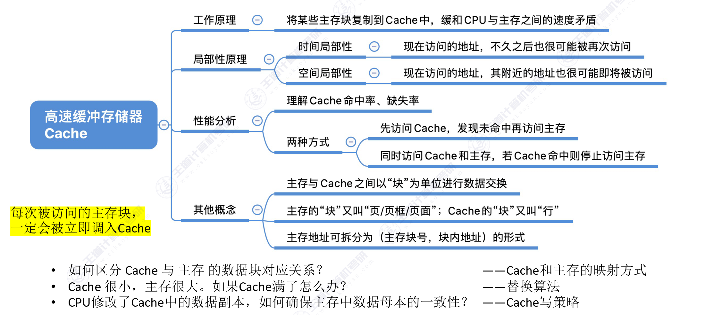
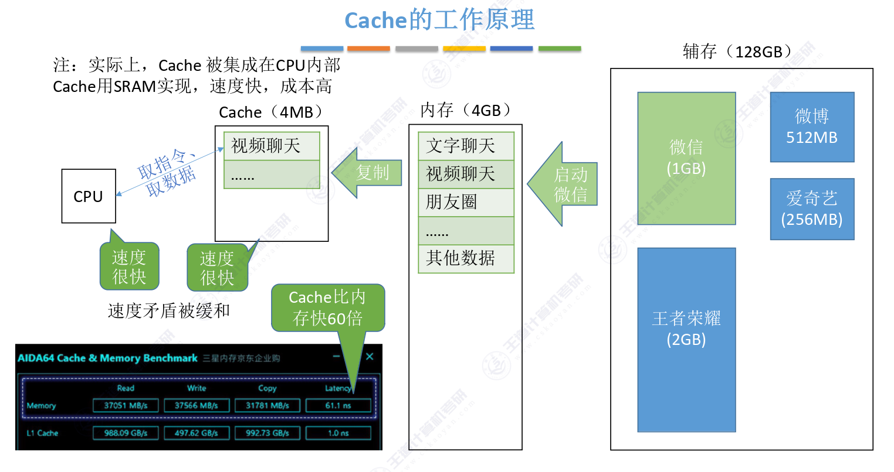
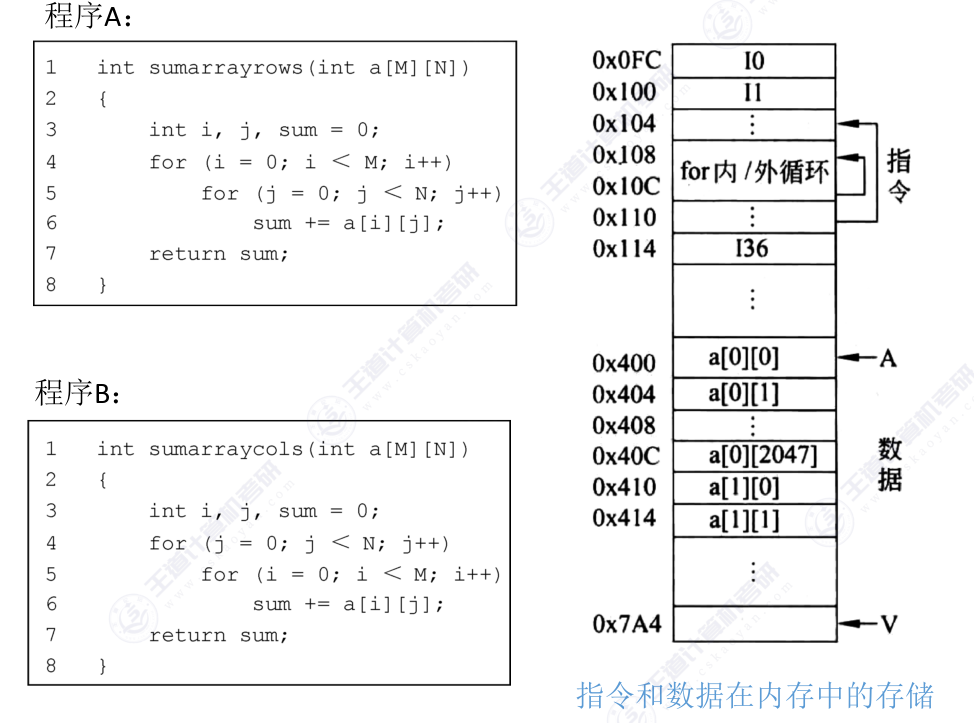
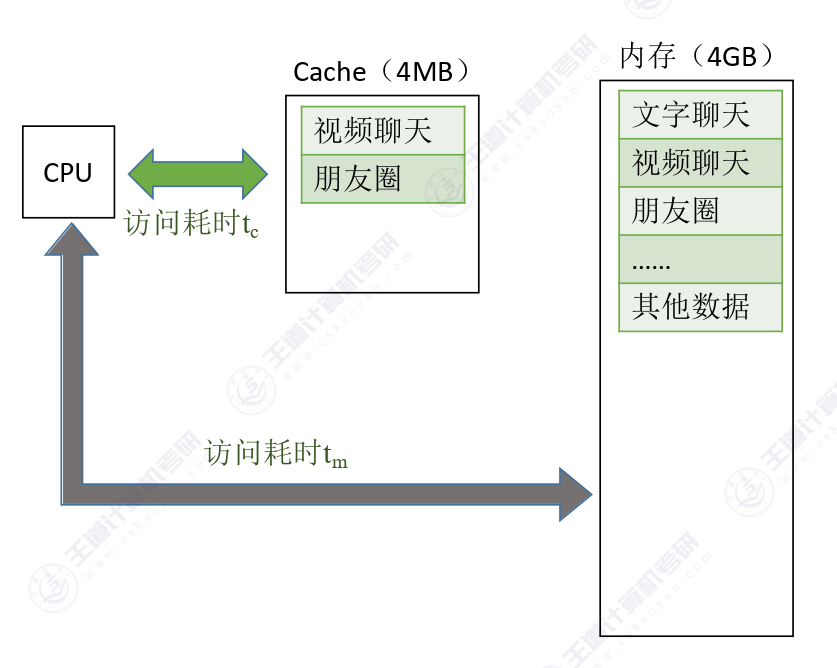
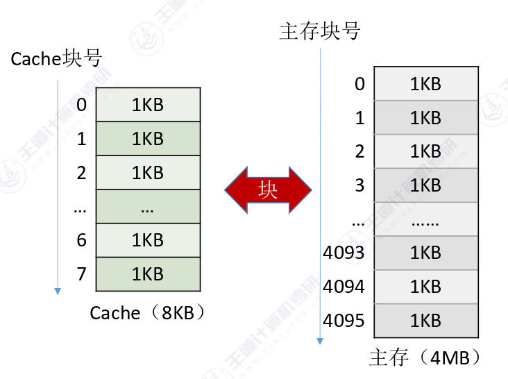
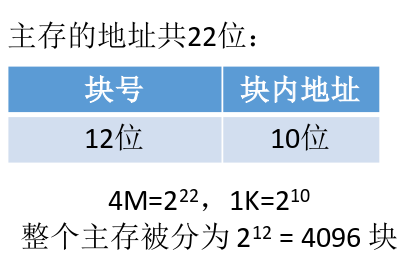

3.5.1 + 3.5.2 Cache的基本原理
思维导图

一、Cache的工作原理
Cache（高速缓冲存储器）是一种位于CPU和主存之间的高速存储器，其核心思想是：
将某些主存块复制到Cache中，缓和CPU与主存之间的速度矛盾
1.1 为什么需要Cache？
现代计算机系统中，CPU的速度远快于主存的速度。如果CPU每次访问都直接从主存读取数据，会导致CPU长时间等待，严重降低系统效率。
以日常生活为例：假设你在用电脑进行视频聊天，CPU大概率只会用到与"视频聊天"相关的指令代码，而微信、朋友圈、爱奇艺等其他应用的数据则暂时不需要。
1.2 Cache如何解决速度矛盾？
Cache利用局部性原理，将CPU当前访问地址"周围"的部分数据预先存放在高速存储器中。当CPU需要访问数据时，首先检查Cache中是否有该数据：
- 若Cache命中（Hit）：直接从Cache读取，速度快
- 若Cache未命中（Miss）：从主存读取，同时将该块数据放入Cache供后续使用

Cache的实现方式
Cache通常用SRAM（静态随机存取存储器）实现，速度快但成本高，因此容量较小（通常为几MB）。而主存用DRAM实现，容量大但速度慢。Cache被集成在CPU内部，Cache比内存快约60倍。
二、局部性原理
局部性原理是Cache能够有效工作的理论基础，分为两种类型：
1. 时间局部性（Temporal Locality）
在最近的未来要用到的信息，很可能是现在正在使用的信息
典型应用场景：
- 循环结构中的指令代码（如
for循环体） - 短时间内被反复访问的变量
2. 空间局部性（Spatial Locality）
在最近的未来要用到的信息，很可能与现在正在使用的信息在存储空间上是邻近的
典型应用场景：
- 数组元素的顺序访问
- 顺序执行的指令代码
空间局部性的差异

假设有两个程序访问同一个二维数组：
- 程序A：按"行优先"顺序访问，空间局部性好
- 程序B：按"列优先"顺序访问，空间局部性差
因此，即使两个程序访问相同的数据，由于局部性不同，Cache的命中率也会有显著差异。
局部性原理的应用
基于局部性原理，我们可以把CPU目前访问的地址"周围"的部分数据放到Cache中。具体考题来说：
- 时间局部性 → 被访问过的数据可能再次被访问，保留在Cache中
- 空间局部性 → 一次传输一个数据块（包含相邻数据），而不仅仅是单个数据
三、性能分析
1. 命中率与缺失率
设 \( t_c \) 为访问一次Cache所需时间，\( t_m \) 为访问一次主存所需时间。
命中率 \( H \)：CPU欲访问的信息已在Cache中的比率
缺失率（未命中率）\( M \)：\( M = 1 - H \)
2. 平均访问时间
Cache—主存系统的平均访问时间 \( t \) 有两种计算方式：
方式一：先访问Cache，未命中再访问主存
方式二：同时访问Cache和主存

3. 典型例题
例3-2：Cache性能提升计算
题目：假设Cache的速度是主存的5倍，且Cache的命中率为95%，则采用Cache后，存储器性能提高多少？
已知条件：
- Cache存取周期为 \( t \)，则主存存取周期为 \( 5t \)
- 命中率 \( H = 0.95 \)
解法一：同时访问（Cache和主存同时被访问，若Cache命中则中断访问主存）
- 命中时访问时间为 \( t \)
- 未命中时访问时间为 \( 5t \)
- 平均访问时间：\( 0.95 \times t + 0.05 \times 5t = 1.2t \)
- 性能提升：\( \frac{5t}{1.2t} \approx 4.17 \) 倍
解法二：先访问Cache再访问主存
- 命中时访问时间为 \( t \)
- 未命中时访问时间为 \( t + 5t \)
- 平均访问时间：\( T_a = 0.95 \times t + 0.05 \times 6t = 1.25t \)
- 性能提升：\( \frac{5t}{1.25t} = 4 \) 倍
注意区分两种访问方式
两种访问方式的平均访问时间公式不同，考试时要根据题目描述判断使用哪种方式。关键区别在于未命中时的处理：
- 同时访问：未命中时只需等待主存时间 \( t_m \)
- 顺序访问：未命中时需要先等Cache时间 \( t_c \) 再等主存时间 \( t_m \)
四、主存与Cache的数据交换
1. 块的概念
基于局部性原理，可以将主存的存储空间"分块"，如每1KB为一块。主存与Cache之间以"块"为单位进行数据交换。

块的不同称呼
- 主存中的"块"通常也称为"页/页面/页框"
- Cache中的"块"也称为"行"
2. 主存地址结构
主存地址可拆分为（主存块号，块内地址）的形式。
以上述结构为例

地址位数计算
题目：主存容量为4MB，Cache容量为8KB，块大小为1KB，求主存地址各位的划分。
解答：
- 主存容量 \( 4MB = 2^{22} \) 字节，因此主存地址共 22位
- 块大小 \( 1KB = 2^{10} \) 字节，因此块内地址需要 10位
- 主存块号位数：\( 22 - 10 = 12 \) 位
- 整个主存被分为 \( 2^{12} = 4096 \) 块
重要性质
每次被访问的主存块，一定会被立即调入Cache。这是Cache工作的基本保证。
3. 待解决的问题
Cache机制引入后，还需要解决以下三个关键问题：
- Cache和主存的映射方式：如何区分Cache与主存的数据块对应关系？
- 替换算法：Cache很小，主存很大，如果Cache满了怎么办？
- Cache写策略：CPU修改了Cache中的数据副本，如何确保主存中数据母本的一致性？
这三个问题将在后续章节中详细讨论。
五、考点总结
核心概念
- Cache的作用：缓和CPU与主存之间的速度矛盾
- 局部性原理：时间局部性和空间局部性是Cache工作的理论基础
- 命中率计算：\( H = \frac{\text{命中次数}}{\text{总访问次数}} \)
- 平均访问时间：注意区分两种访问方式的公式
常见考点
考点1：局部性原理的理解
- 时间局部性：循环变量、临时变量等被反复访问的数据
- 空间局部性：数组遍历、顺序执行的指令等相邻访问的数据
考点2：Cache命中率与缺失率计算
典型计算题
题目：已知Cache命中率为0.9，Cache访问时间为100ns，主存访问时间为400ns，求平均访问时间（若采用同时访问方式）。
解答：
[ T_{avg} = H \times T_c + (1 - H) \times T_m ] [ = 0.9 \times 100 + 0.1 \times 400 ] [ = 90 + 40 = 130 \text{ns} ]
考点3：数据交换单位
- 主存与Cache之间按块传输。
- 主存中的块称为页/页框/页面
- Cache中的块称为行
考点4：地址划分
- 主存地址 = 主存块号 + 块内地址
- 块内地址位数由块大小决定（块大小为 \( 2^k \) 字节，则块内地址为 \( k \) 位）
- 主存块号位数 = 总地址位数 - 块内地址位数
考点5：两种访问方式比较
| 比较项 | 先访问Cache | 同时访问Cache和主存 |
|---|---|---|
| 未命中时延迟 | \( t_c + t_m \) | \( t_m \) |
| 平均访问时间公式 | \( Ht_c + (1-H)(t_c+t_m) \) | \( Ht_c + (1-H)t_m \) |
| 性能提升效果 | 较低 | 较高 |
掌握这些基本概念和计算方法，是理解后续Cache映射方式、替换算法和写策略的基础。